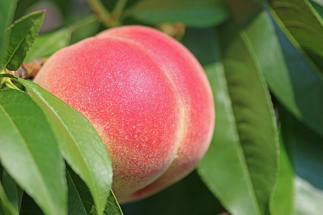

Freshness You Can Trust

Peach is a sweet, juicy, and fragrant fruit that is rich in vitamins A and C, dietary fiber, potassium, and antioxidants. It helps improve digestion, supports healthy skin, boosts the immune system, promotes heart health, and keeps the body hydrated. Peaches are low in calories and make a refreshing and nutritious snack. They can be enjoyed fresh, in fruit salads, smoothies, desserts, or juices.